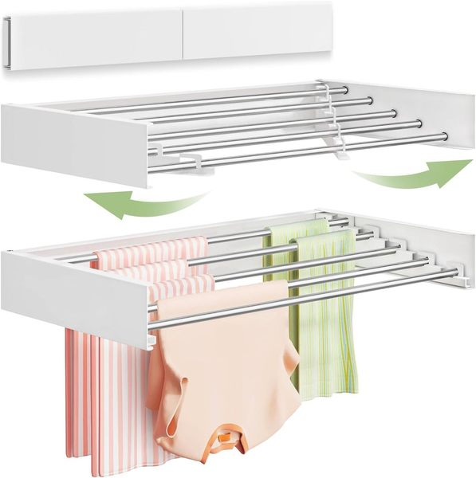

For most of us, laundry day consists of carrying a heavy basket to the washer, dumping it on the floor, sorting through the pile, washing, drying, and then leaving clean clothes in a basket for three business days before finally folding them.
The reason laundry feels so exhausting isn't the physical act of washing—it's the lack of an efficient Workflow. By setting up physical stations in your laundry room that correspond to the four stages of laundry (Sort, Wash, Dry, Fold), you eliminate the friction that makes laundry feel like a chore.
Here is the 4-Step Laundry Workflow Rule to organize your space and make laundry infinitely easier.
Step 1: The Sorting Station (Input)
The biggest time-waster in laundry is sorting dirty clothes on the floor. To fix this, your laundry room (or bedroom closet) needs a dedicated sorting station. Use a multi-bag hamper system (one for whites, one for darks, one for delicates). When a bag is full, you simply grab it and dump it straight into the washer. No sorting required.

Laundry Hamper Sorter Cart
Problem: Sorting dirty clothes on the floor takes up space and wastes huge amounts of time.
Solution: A rolling sorter cart allows you to organize lights, darks, and delicates immediately as you take off your clothes.
- Pre-sorts laundry to save time and effort
- Removable bags make transferring clothes easy
- Heavy-duty wheels glide from room to room
Step 2: The Washing Station (Process)
This area surrounds your washing machine. To optimize workflow, your detergents, stain removers, and fabric softeners must be within arm's reach of the washer door. Store them on a shelf directly above the washer, or on a slim rolling cart tucked beside it. Decanting liquids into clear pump dispensers saves space and makes adding detergent a quick, one-handed task.

Slim Rolling Laundry Cart
Problem: Bulky detergent bottles crowd the top of the washer and fall on the floor.
Solution: A slim rolling cart slides perfectly into the tiny gaps beside your machines, keeping supplies hidden but instantly accessible.
- Transforms wasted gaps into functional shelving
- Keeps unsightly cleaning bottles hidden away
- Rolls out easily to access whatever you need
Step 3: The Drying Station (Output)
Not everything goes in the dryer. A proper drying station includes both the dryer machine and a designated area for air-drying delicates. Install a wall-mounted accordion drying rack directly above or next to your machines, or keep a rolling garment rack tucked in the corner. This ensures wet clothes never end up draped over chairs or doorknobs.

Wall-Mounted Folding Drying Rack
Problem: Without built-in rods, wet clothes end up draped over doors and chairs.
Solution: This accordion-style rack mounts directly to the wall and pulls out when you need to air-dry clothes, then pushes completely flat against the wall when you're done.
- Zero footprint—keeps the floor totally clear
- Folds away discreetly when not in use
- Surprisingly sturdy for heavy, wet garments
Step 4: The Folding Station (Completion)
This is where most workflows fail. If you don't have a place to fold clothes, they end up back in the basket. Create a dedicated folding station right in your laundry room. If you have front-loading machines, install a wooden countertop directly over them. If you have top-loaders, attach a drop-down folding table to the wall. The rule is simple: Clothes do not leave the laundry room until they are folded or hung.
By creating these four distinct physical zones in your small laundry room, the chore transitions from a chaotic, multi-room mess into a smooth, efficient assembly line.